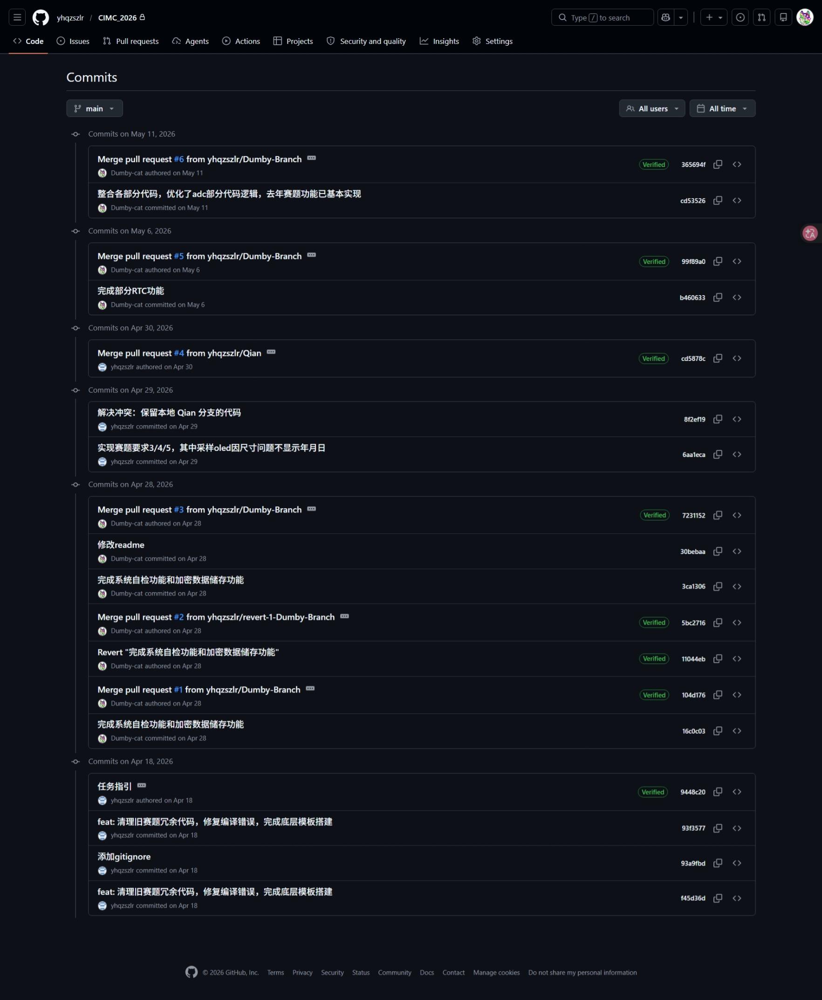
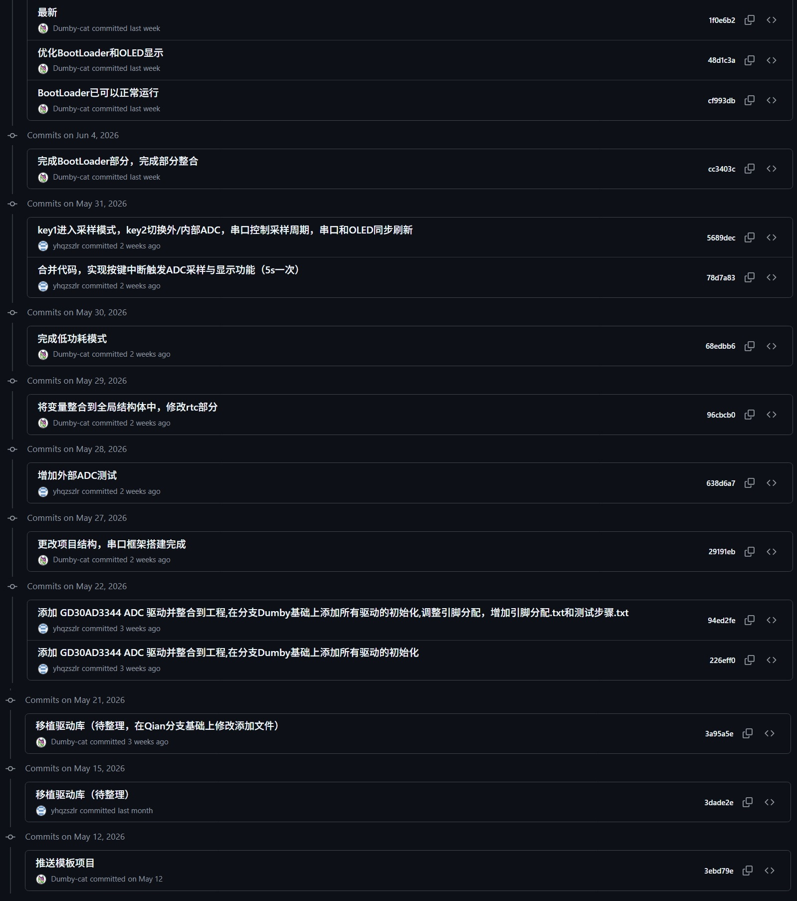
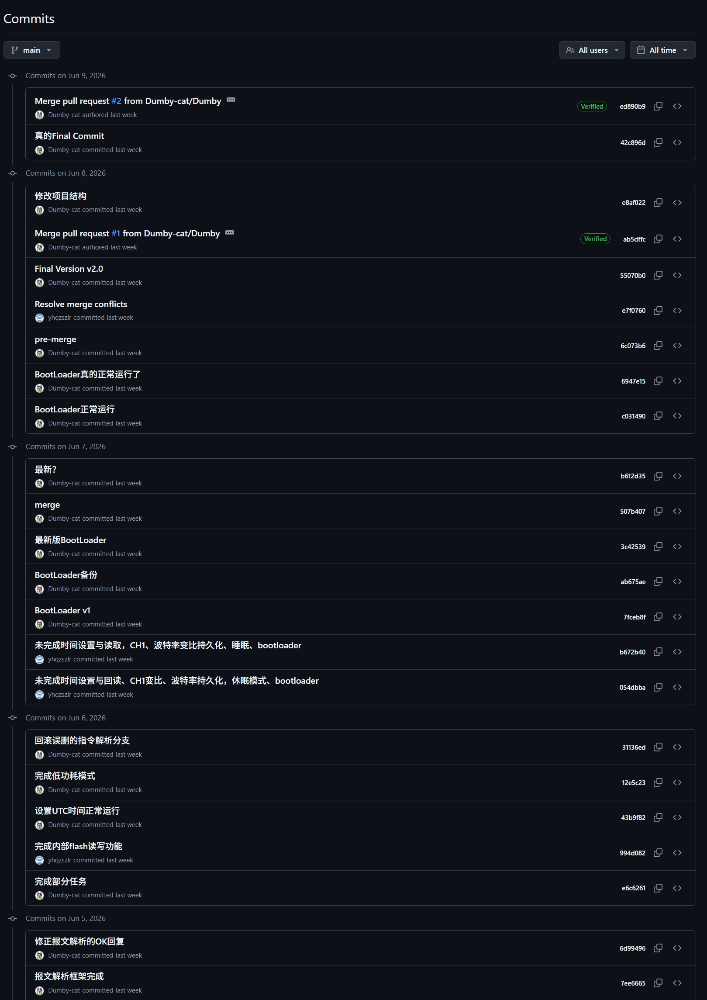
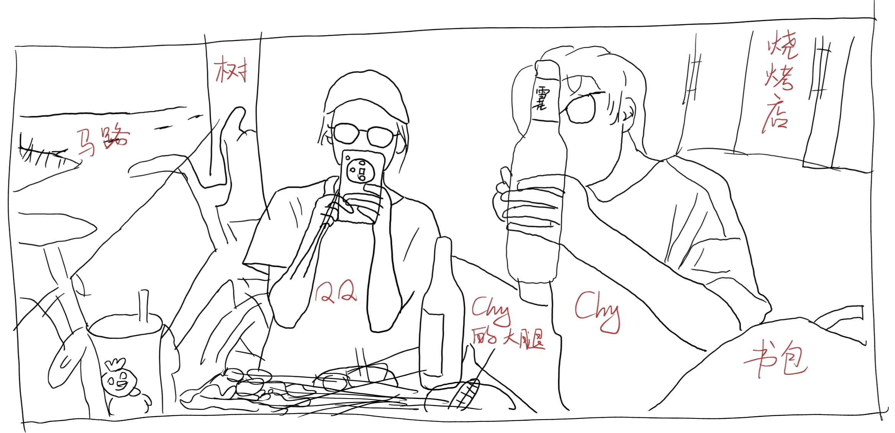

西门子杯赛后呓语
十一号中午西门子杯正式结束（这甚至是我上大学以后参加的第一个省级往上的工程科技竞赛😭），这两天闲下来（虽然还有期末考）写点东西吧。
以下内容信息密度极低，闲的没事的可以看看。
主角一览
QQ：偏算法，ADC部分基本全部由她负责，除此之外还清算了各种大大小小的题目和功能，主要的情报来源。
Chy：硬件佬，打板仙人，硬件以外也是啥都会点，我吃了他好多好多包辣条，QQ 的男票。
我：小呆呆，对硬件一窍不通，软件小白，好几次找不到人因为在睡大觉。
流水账
我在这里不会详细讲代码的详细思路和具体是怎么写的，只是记一下流水账，后面会有一个注意要点的部分。还有我已经有点记不清一些具体的事情了，就主要写我负责的部分了。
我在大学里实在是有些疲于收集信息情报了，在三月前都还没了解过西门子杯。三月底 Chy 叫我去和他俩一起组队打工业嵌入式赛道，考虑到时间没有很冲突，在期末第一门开考前能全部打完（指中午完赛晚上考期末考🤫），周期相对比较短而且难度还行，那还说啥了，那就打呗。
四月初差不多确定要打，那时候初赛的样题和说明都已经出了（分别于三月一号和三月六号发布），我们在 Github 上找了个去年的省一的代码，拿来自己对着去年赛题和今年样题重写了一遍放自己库里，这一步很有用：既可以熟悉一下题目和代码，今年出题以后还可以直接从库里掏之前写好改好的代码用，非常省事。至少一开始以为今年题目和去年应该差不了多少的时候是这么想的。不过有一说一 Keil 工程用 git 维护起来是真的麻烦😡，不过后来队友推拉之前之后沟通一下也还好。

四月二十五号出硬件题，Chy 开始高强度工作，但是由于我对硬件一窍不通，实在帮不上忙，就继续写去年题目的代码，到五月初五一之后差不多我和 QQ 把去年题目的代码整合完跑了一遍，基本能顺利完成去年的所有赛题。
完成去年的题目以后我们开始琢磨 QQ 从应该是B站找到的一个叫 “马眼镜” 的博主在四月初发布的一个例程包，里面的内容和今年赛题是很贴合的。我们开始搬运重写例程代码，根据样题和去年赛题给自己设定了一些任务用于测试样题上要求的各项功能，期间主板还调坏了一次。购入新板子以后，最后在开赛当天的凌晨完成了今年例程和我们的去年的代码库的整合，在开赛前写出了一个比较完整的库（还是有一些没调好的，比如用 RS485 的串口通信、外部 ADC 部分等）。

Day 1
六月五号晚上八点正式开赛，一看题目又臭又长。通读了一遍题目，和去年题目还是有挺多区别的，差不多是去年题目的 Pro Max 版。先直接挑最重点的做，一看报文解析那部分之前没写，这个做不出来基本零分了直接，我就开始写这个协议通信，与此同时 Chy 和 QQ 继续浏览整理题目（因为这题目出的真的太长太啰嗦了，没什么条理表述也不清晰）。
因为形式固定，报文解析实现起来还算简单，花了我大概三个半小时把这部分写完，期间另外两人已经开始写题目里那些零碎的任务了。我把报文解析部分上传以后，大家开始往里面填充各个任务的代码。三个人之间的任务分配非常关键，如果有一些不方便几个人一起写而且还耗时的任务一定要分个人赶紧开始写（比如本次赛题的 BootLoader 部分），我分到的 RTC 任务（设置时间读取时间）和深度睡眠任务，QQ 继续完成那些零碎的任务以及 ADC 部分。
我又花了三个小时差不多在六号凌晨两点二十五传上去这几个任务代码的初版，等 QQ 用板子的空闲上板试了下发现不好使。RTC 的任务还算好调因为原来的库里有很多 RTC 代码，只要写两个时间戳和 RTC 时间相互转换的函数就行，深度睡眠的任务就有点麻烦了，因为之前没试过用 Alarm 唤醒低功耗模式。调到三点多快四点因为六号早上还有节早八的实验课，就先回去小睡了一下，另外两个应该是四点半回去的。
第一天相当于完成了基础协议通信（用的 USB 串口线搭配 USART0，还没调 RS485）、一些小任务，要写进 Flash 的参数设置任务（除了波特率不能持久化）、设置读取时间和深度睡眠模式的初版代码，继续调了之前没调好的外部 ADC 和串口（还是没调好）。
Day 2
上午我在上课时 Chy 去把电源的板子调好，可以正常使用。上完课我十一点半回来把设置读取时间的部分调出来以后，没啥进展去吃了个 KFC，回来成功把深度睡眠调好了。过了会 Chy 把外部 ADC 的初版（可以正常读到电压温度）也调出来了。深度睡眠之前的问题是初始化时时序有问题，导致寄存器配置完以后马上被清空了；ADC 之前的问题应该是嘉立创焊的板子有个焊盘掉了😡。
BootLoader 部分基本全由我负责，写完深度睡眠以后整合了一下就开始写。由于题目要求和库里的 BootLoader 地址分配和固件包安装等等都有很大区别，工作量比较大（对我来说），我后面主要任务基本就是调 BootLoader。
我先把原来这版所有有关地址的部分改成题目要求的分配。比较麻烦的是题目在 BootLoader 区也是要进行交互的，也就是说 APP 区的串口通信和协议解析的代码 BootLoader 也要有一份。把 APP 区的 LED、OLED、USART、I2C、ROM 模块搬到 BootLoader 区以后，开始完成题目要求的报文指令的交互，并把代码接收的部分改成了符合题目的切片接收。同时为了能够确定当前状态，重新写了一遍从特定地址读写 Flash 的函数，将重要参数或者标志存到特定地址让 BootLoader 区和 APP 区能够借此交互。期间还把原来 BootLoader 代码中一些多余的功能删掉了（其实不应该删的，这点后面说）。
在完成了大部分 BootLoader 功能的未调试初版以后，已经是七号的凌晨快五点了，第二天也差不多到此结束。
Day 3
来了先把 Day 2 写的 BootLoader 的代码上板跑一下果然是无法正常运行，不说无法烧录，连 APP 区都没发正常跳转。就因为没法正常跳转从起床一直调到下午，从 一开始的开始烧录 APP 代码就死机，到莫名其妙（真的原因不明）不死机了但是还是无法进入 APP 区（能跳转到 APP 区但是一跳转就会卡死），再到发现 Flash 片擦除用成了扇区擦除导致卡死（这时候能正常进 APP 区了但是参数持久化又出问题），再到最后发现 APP 区初始化时序有问题（啊对又是初始化时序）导致持久化的参数被擦除 ，终于成功实现从 BootLoader 正常跳转 APP 区并发送心跳帧。在修改读写 Flash 的代码时同时也调好了之前波特率不能持久化的问题。
不过光进入 APP 区远达不到题目要求，上板以后发现固件包也无法正常下载跳转。检查后发现主要问题在切片接收和魔法字检验上：切片接收的时限要适当调高点，考虑到各个模块的延迟和一些玄学原因；魔法字检验完以后要把魔法字的四个字节抛弃，从第五个字节开始下载到 APP 区的内存上。最终我在大概五点的时候将 BootLoader 的功能大部分实现了。
与此同时，我的两位队友将 RS485 串口通信和其他基本所有任务都完成了，除了有几个任务还有一些小 Bug。
终于我们在大概八号凌晨六点将所有代码整合跑了一遍自动测评，没怎么仔细看结果先出去吃早饭了，不过后面看这次的代码已经可以完成大部分任务了。
在美美吃完一顿徽州早点以后我们大概七点半回去结束了第三天（怎么越熬越晚了还）。

Day 4
仔细看了下测评结果以后发现最主要的 BootLoader 和 ADC 还是有些小问题。QQ 和 Chy 开始调 ADC，我开始调 BootLoader。
调完发现 BootLoader 部分一个主要问题是直接做了字符串匹配而没有解析报文，导致设备号改了以后就识别不到命令了；另一个主要问题是先下载后检验魔法字，而且检验失败以后直接跳转 APP 区而不是等待下发新固件包。改完以后 BootLoader 部分跑自动测评可以做到全部通过。
下午我们去科协（方便焊板子而且设备如电源和电子负载齐全），Chy 继续调 ADC，我开始将原来的代码结构改成符合题目要求的结构（就是把这个文件夹的代码放另一个文件夹里之类的），期间还把原来代码中一些多余的功能删掉了（其实不应该删的，这点后面说😭）。由于我的过度自信（认为改点这种东西肯定出不了什么问题），没有找还在调 ADC 的 QQ 把板子拿来跑一下自动测评，而是和Chy 去找录视频的地方（当时已经五六点了，视频录制截止时间是八点）。
QQ 最终在六点半差不多调出来以后发现仅需多加几行代码，我就把这几行代码直接粘贴到我整理过的代码上，熟悉了一下流程后便开始录制。
由于不熟悉流程以及操作不熟练，几个人耽搁了一段时间后终于正常录了一个进入自动测评的视频了（这个视频开始录制已经是七点二十七了），自动测评时却发现原本应该全部正常通过的代码现在全部无响应。我们立刻停止录制开始调试，这时候已经是三十九分了，时间非常紧迫。看了一下自动测评是从参数持久化也就是写入 Flash 开始超时，我们查了下 Flash 部分的代码，但是从上次能跑以后根本就没有改过这部分代码，只有我删掉了一些注释。浏览了一遍 Flash 的库，由于一下子查不出是哪里出问题，只好回滚到上一个版本的代码（也就是没有修改结构的那版，我甚至还没把调好的 BootLoader 部分上传，所以这版的代码的 BootLoader 也是有问题的，但是我忘了这事了☹），把 ADC 改过的代码加上以后急忙开始录制。
这里我先嘴硬一下，所有的题目要求（无论是之前发的还是赛题或是上位机上的标注）全都没有明确说明具体的评分规则以及提交时间的处理方式，仅仅说了视频拍摄截止时间是八点而所有文件的上传截止时间是十一点五十九分——并没有说明不能上传新的代码和测试结果！😡😡
录制开始，Chy 发现上次录制时电子负载忘记开了，这次开了以后电源板也跑不满了（事后 Chy 描述是因为太自信把电流设置太高了）。进入到自动评测阶段，发现主循环里 printf 电压值的代码忘记删了，自动测评界面一直在跳电压值。刚看到这里的时候我们其实是有时间立马删掉对应代码赶紧开始重新录制的，但是风险太大我们还是让自动测评跑完结束录制了。
这时候七点五十五我们已经没什么还能补救的了，就开始复盘代码，尝试找出为什么新代码跑不通。
我想着上一版都能跑这版跑不通那就是整理的时候出问题了呗，我从最主要的代码开始用文本比较器对比看看哪里多了什么少了什么。
搞笑的是问题就出在我检查的第一个文件 Function.c 里：我在删除那些多余的代码时在初始化部分多删了一行 spi_flash_init() 。
啊对没错就是这一行。
就只因为这一行。
加上以后再跑了一遍自动测评直接就跑过了。
我 chovy，我删代码给我删好了啊😭😭😭
但是事已至此，我们只好把新的代码、测试结果、电路文件以及原来的视频上传以后，以一顿美美的烧烤结束了失败的 Day 4。

这里我还是要嘴硬一下，**所有的题目要求（无论是之前发的还是赛题或是上位机上的标注）全都没有明确说明具体的评分规则以及提交时间的处理方式，仅仅说了视频拍摄截止时间是八点而所有文件的上传截止时间是十一点五十九分——并没有说明不能上传新的代码和测试结果！**😡😡
Day 5-8
这段时间就是稍作歇息然后把设计文档和 PPT 以及系统介绍视频录制完成并上传，几个人分工，没什么具体好讲的（不过由于那几天我的实验课比较多，另外两人写了大部分）。
值得注意的问题
我把我能想到的问题都写一写吧。
- 在开赛出题前一定要有一个自己的库，这会大大减轻比赛四天的负担。
- 最好在开赛以后先将代码改成符合题目要求的结构，不要等最后代码多了再调整，容易出很多莫名其妙的问题。
- 时序非常关键：不管是硬件初始化或者配置的时序还是头文件加载的时序，一定要检查一下初始化的顺序会不会在某些特定情况下出问题。
- 只在一个情况下跑过能跑通的代码在其他情况下未必有用，我写的 RTC 就是初始化时序有问题但是不用 Alarm 的时候就是没问题的。
- 最好不要每个文件都包含所有的头文件，用到哪个包含哪个，不然可能会冲突或者出一些更莫名其妙的问题。
- STLink 的 3.3V 接口不能在有其他供电的情况下（比如板子还和电脑接着 USB 串口线）接到板上，会导致电压倒灌烧掉主板，我们的板子就是这样烧掉了一块。
- STLink 的 Reset 最好不接，这样在 STLink 拔掉以后板子还可以正常通过复位键复位。
- 用不到的代码不要删，一是留着不会对代码造成任何影响，二是可能会误删一些有用的代码，三是写设计书的时候可以把这些部分作为创新点写上去。
- 完成每个任务以后或者每个大改动前后多保存，如果用 Git 维护那就多推 Commit，方便后续回滚或者查询。
- 完成一些关键改动以后一定要上板测试一下，防止翻车。
- 设计书三天写完全来得及。
- 一定要在比赛截止前至少两个半小时开始录制，提前两个小时应该只要要录了一版视频。
- 调代码的时候调不出来多输出看状态，再调不出来也要考虑下是不是硬件问题。
暂时想不到别的了，如果有问题可以邮箱联系我，我的邮箱站点“关于”有写。
总之，也算是一次比较有收获的比赛了吧。
最后，感谢学校的支持，感谢老师的知道，感谢父母培养，感谢队友的付出，也感谢队友父母对队友的培养🤓